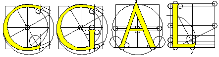
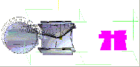
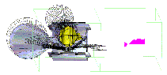
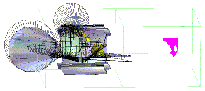
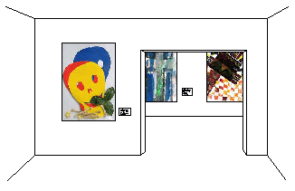
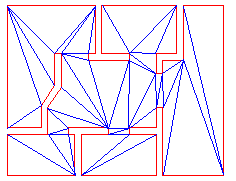
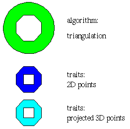
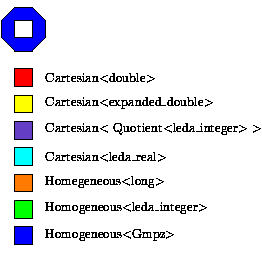

Remco Veltkamp
Department of Computer Science, Utrecht University
Padualaan 14, 3584 CH Utrecht , The Netherlands
Remco.Veltkamp@cs.uu.nl ,
cgal@cs.uu.nl
Geometric computing is difficult: algorithms are often non-trivial, many special cases occur, and robustness problems cause wrong computations and wrong flow of control. CGAL, the computational geometry algorithms library , meets these problems. It provides a collection of standard geometric data structures and algorithms. It allows to choose fast floating point as well as robust exact arithmetic. Also, it is a flexible, generic, library: users can plug their own primitive types (point, vector, etc.) from their applications.
CGAL is used in application areas such as GIS, robotics, virtual reality, and shape modeling. These emerging application areas are among the fastest growing areas in information technology. Marketing surveys indicate a strong market for C++ based development tools like CGAL in these areas.
There are very many industrial applications where geometry comes into action. One example is satellite layout design. Here the problem is to calculate admissible placements of devices on walls, ceiling, and floor of the satellite, possibly taking into account constraints with respect to cabling. The figure below gives a few examples. The piece being placed is drawn in yellow. The boundaries of the fields of vision are represented as slashed areas. The admissible space is drawn on the right in magenta. A white point is shown in this admissible space, which corresponds to the current position chosen for the yellow instrument. For more information about this application, see [1].



However, geometric computing is difficult, for a number of reasons:
These aspect are treated in the following sections.
People often solve geometric problems by intuition. However, the result is not always correct, and often not optimal in terms of the complexity of time and space used. One solution is to consult a computational geometry text book. However, most text books ignore special cases, such as degenerate input, for simplicity. Unfortunately, many real life input data sets are degenerate by construction. Another possible solution is to use existing software. Several options can be chosen. There are repositories of small programs for specific tasks, see for example the Geometry Center, Graphics Gems, or Netlib. The drawback is that all these independent little programs use their own primitive types, their own way of handling degeneracies, etc. Although such repositories are often a big success, the code must typically be changed in order to adapt it to the users' own needs.
Another choice could be to use a large package for an application area, such as finite element analysis, see for example the web guide to available mathematical software GAMS. The drawback of this is that such a package often offers a monolithic hierarchy of dependent classes and object, tailored towards a specific application domain.This may be difficult to use in combination with your own application with its own class hierarchy.
The use of finite precision floating point arithmetic leads to non-exact computations that can lead to wrong computations and the wrong flow of control. The effects are wrong results, segmentation faults and bus errors, and infinite loops. A popular way of handling these problems is "epsilon tweaking": a value is considered to be zero if its absolute value is smaller than a chosen epsilon. A value for epsilon is then typically found by a trial-and-error approach. Clearly, this is not a real solution, since there is no guarantuee that the program will work correctly for all input. There are two real solutions to the robustness problem: change the model of computation, or use exact computation.
Suppose you have a 3D geometry of an art gallery, and you want a triangulation of the floor, as shown below.


The points of the gallery are given in 3D, but the triangulation should be in 2D. This can be handled by projecting the points on the floor, and maintaining a correspondence between the original and projected points. Another way to handle this is to change the code of the algorithm to work with 3D points and to ignore the third coordinate. Both are bad solutions.
Because of the above problems, the computational geometry community itself has started to develop a well-designed library: CGAL, the Computational Geometry Algorithms Library. CGAL is a C++ library that contains a number of different parts. The elementary part of the library (the kernel) consists of primitives, constant storage size geometric objects (such as points, lines, and spheres) and predicates on them (such as orientation test for points, intersection tests). The next part of the library contains a number of standard geometric algorithms and data structures such as convex hull, smallest enclosing circle, and triangulation. The last part of the library consists of a support library for example for I/O, visualization, and random generators.
Rather than building a `geometric gems' repository, where everybody can contribute to, we decided to design a library. With CGAL we want to provide a foundation for application programs that is sufficiently generic to be usable in many different areas without the need to adapt the code. Developing such a foundation must be done in a consistent way in order to make it reliable, efficient, open, etc. To be able to cope with the complexity of the developing process, we have decided to build a consistent library by a number of institutes.
CGAL is developed for different groups of users, both in academia and in industry. There are the researchers working in computational geometry itself who want to use the library to more easily implement and test their own algorithms. There are users in related areas, with substantial knowledge of computational geometry who want to use geometric algorithms in their application areas. There are developers with little computational geometry knowledge, who want to use CGAL in, possibly commercial, applications. All these groups of users have rather different demands. To please all of them, we have made a number of design decisions, some of which are described below.
Especially in the field of computational geometry, robustness of software is of vital importance. In geometric algorithms, many decisions are based on geometric predicates. If these predicates are not computed correctly (for example due to round-off errors), the algorithm may easily give incorrect results. For some algorithms, strategies exist to deal with inexact predicates. However, in general this is very difficult to achieve. One way to deal with robustness problems is to perform exact arithmetic, which implies exact geometric computation [2].
The applications of the CGAL library will be very heterogeneous, with very different requirements. To make the library as general as possible, C++ templates (parameterized data types) are heavily used. This enables the user to choose an appropriate number type for doing computations and to choose the representation type of points and other geometric primitives. It is even possible to replace a CGAL data type with a user defined one, as illustrated below.


More about this generic programming paradigm can be found in [3].
A computational geometry library must be efficient to be really useful. Whenever possible, the most efficient version of an algorithm is used. Clearly, a library algorithm cannot be the best solution for every application. Therefore, sometimes multiple versions of an algorithm are supplied. For example, this will be the case if dealing with degenerate cases is expensive, or when for a specific number type a more efficient algorithm exists (in which case it will be implemented as a C++ specialization). Another (C++ level) decision that has been made in favor of efficiency is that geometric objects do not share a common base class with virtual methods.
Generality and ease of use are not always easy to combine. The abundant use of templates seems to make the library difficult to use for people who just want to do something simple with it. Through C++ typedefs, the use of templates can be effectively hidden to the novice user. It is not possible to guarantee that the user will never see templates at all (for example the templates will sometimes become visible in error messages of the compiler or during low level debugging). Developing computational geometry applications is in general very difficult because of problems with inaccuracies and degeneracies. To handle a number of these problems, the algorithms in the library contain many pre and postcondition checks. By setting a compiler flag, these checks will be performed, which can be a great help when debugging an application.
Functionality for visualization is not part of the geometric objects themselves. Naturally, it is not an intrinsic property of, say, a sphere, that it can be converted to OpenGL format. In providing functionality for visualization, we aim for uniformity and openness. Uniformity means that all kinds of visualization is approached in the same way. This is achieved through expressing I/O in terms of C++ streams in a support library. Openness means that any user can supply other streams for other visualization tools than provided by the CGAL support library.
Apart from the above mentioned design issues, there are several others that apply to a library like CGAL. In order to meet those different goals, CGAL is set up in a very generic way. Algorithms in CGAL are generic, they work with a variety of implementations of predicates and representations of geometric objects. This allows to easily interchange components as long as they have the same syntax. Genericity could have been achieved through inheritance and virtual functions. However, we opted for writing template code as it has the advantage that it doesn't cause runtime overhead. The next sections present the use of templates, operator overloading, the Standard Template Library, and traits classes in CGAL.
Template parameterization of geometric objects, data structures, and algorithms by a class that maps basic geometric objects to representation (Cartesian, homogeneous) and number types (double, integer, etc.) allows to write generic code at a higher level. In this way, the application programmer can choose to use fast floating point arithmetic, or exact arithmetic with homogeneous coordinates, for example, changing just one line of code.
Algorithms and data structures are fully generic in the sense that they do not depend on the concrete physical representation of the underlying primitives. To enhance adaptability and reusability, CGAL algorithms and data structures are built on an abstract view of the primitives, through the use of templates, iterators, and traits classes. This allows the application programmer to plug a container type or application point type that is not yet known at the time of developing the algorithm.
In this way, the CGAL library meets design goals such as robustness, efficiency, and flexibility. The library is continuously being extended with additional algorithms and data structures that are designed in the same way, so as to maintain a uniform look and feel.
This work is partially supported by the ESPRIT IV LTR Project No. 21957 (CGAL).
[1] Geometric Data from Application Domains. CGAL Workpackage 4 Report 2, Fall, 1997.
[2] S. Schirra. Precision and robustness issues in geometric computation. In Handbook on Computational Geometry. Elsevier Science Publishers, Amsterdam, The Netherlands, 1998.
[3] H. Bronnimann, L. Kettner, S. Schirra, R. C. Veltkamp. Applications of the Generic Programming Paradigm in the Design of CGAL. Utrecht University, Department of Computer Science, UU-CS-1998-39, November1998.